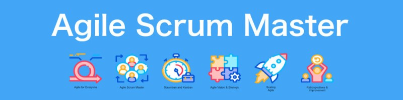

Agile & Scrum

I have worked in Agile teams following Scrum methodology, attending daily standups, sprint planning, and retrospectives. My role ensures quality is baked into every sprint cycle.
- Active in daily Scrum meetings
- Write and review test cases aligned with sprint stories
- Collaborate with developers for early defect detection
- Track progress using Jira boards
← Back to Home